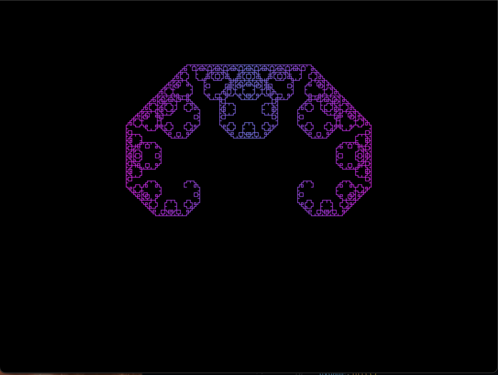
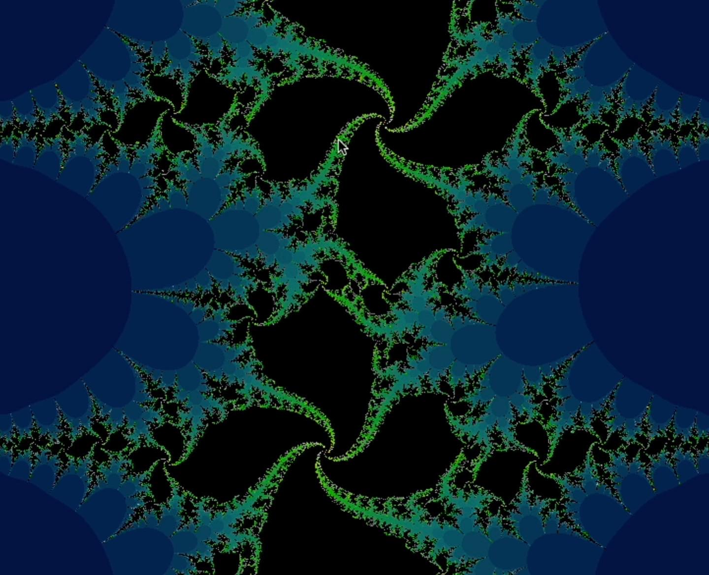
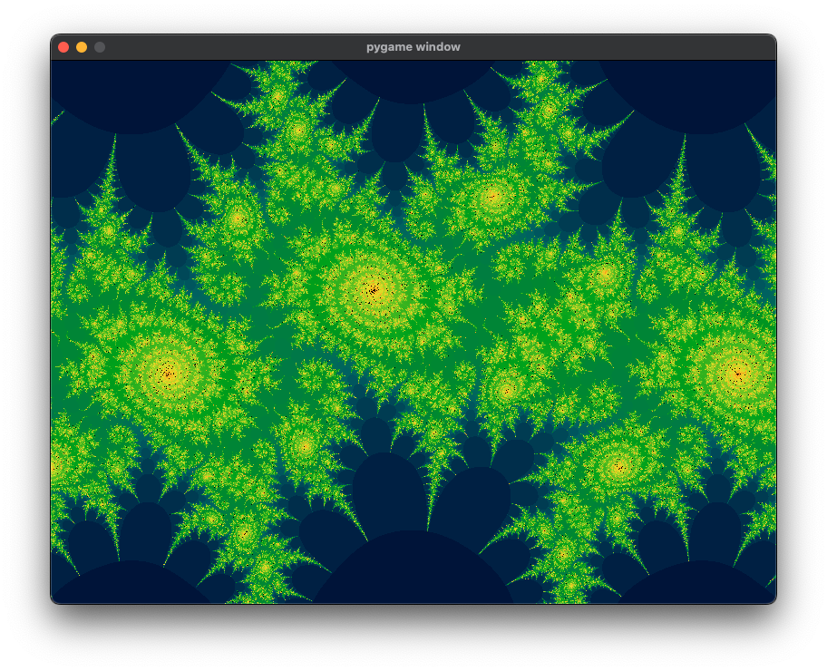
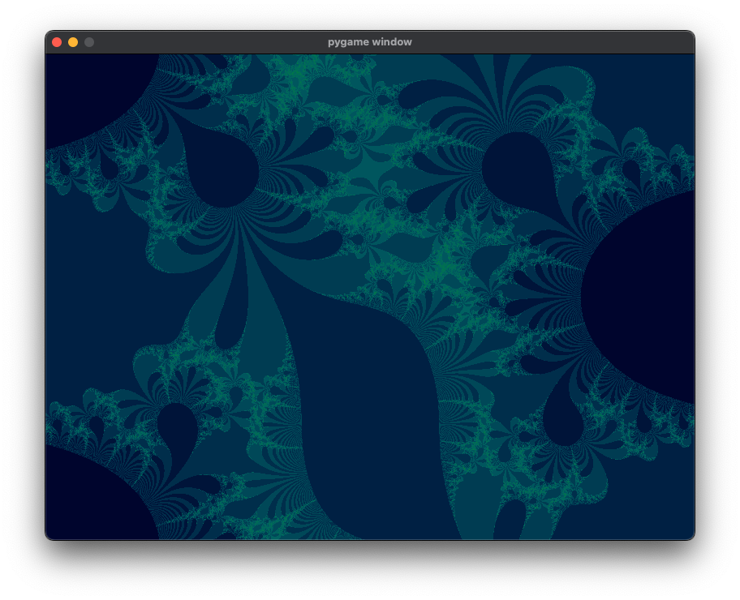
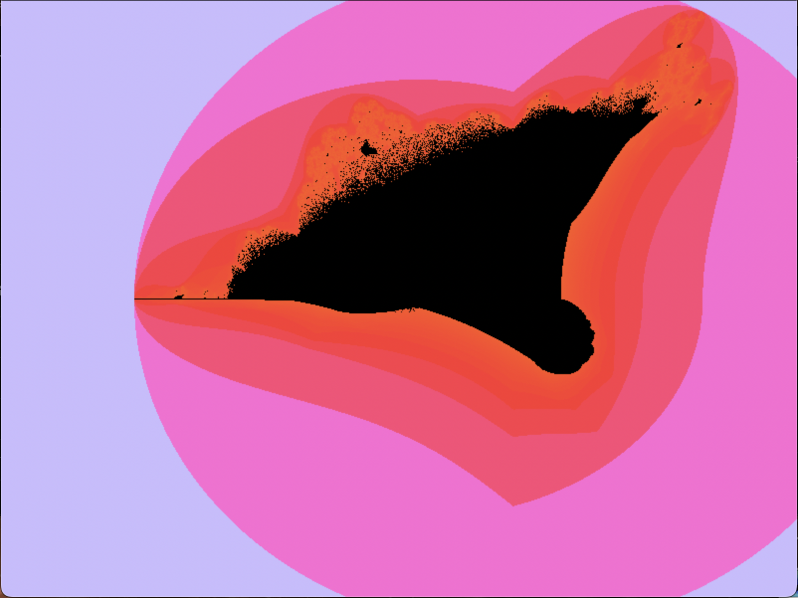

Simulation
Fractal Visualizations
In Calculus BC we spent a day exploring fractals. I was immediately intrigued — particularly by the stunning images produced by iterative mathematical processes like the Mandelbrot set — so I set out to learn more.
I began with the Lévy C fractal, which can be visualized using a simple iterative algorithm. For more complex fractals I implemented the escape-time algorithm, which allowed me to visualize the Mandelbrot, Julia, and Burning Ship fractals along with many other variations.





